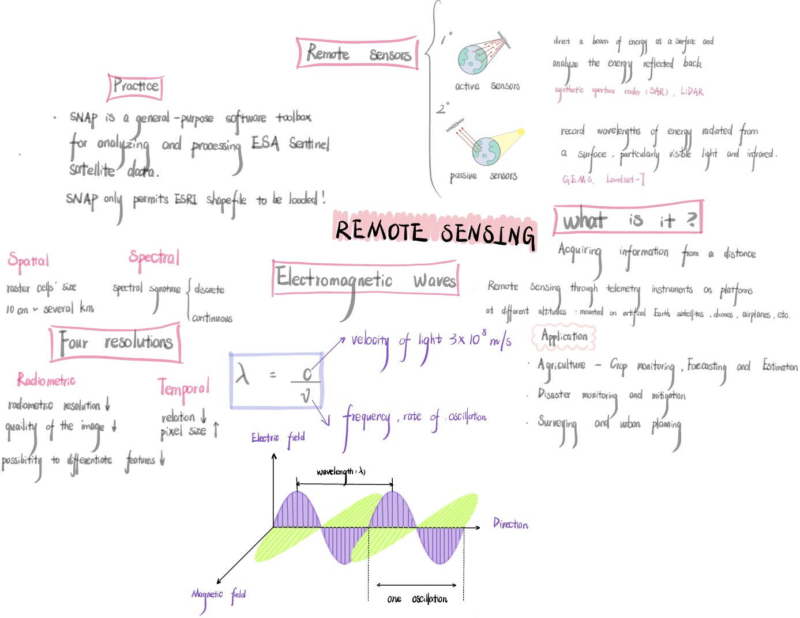
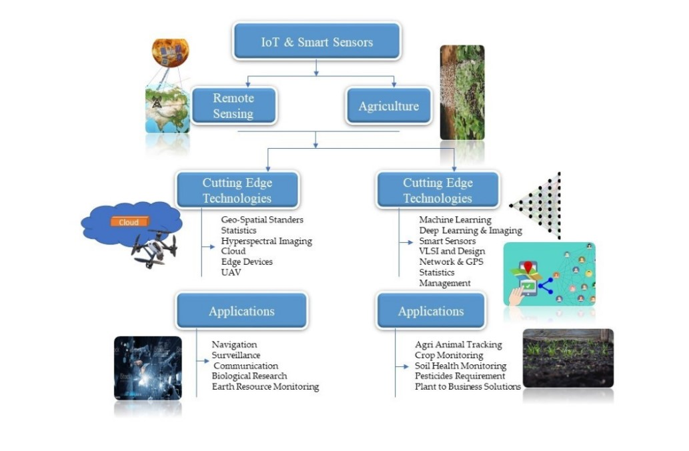

Week 1 - Introduction to Remote Sensing
1.1 Summary
The summary of Lecture 1 will I show in a hand-drawn mind map as shown below, as I referred to my study journals from previous years and felt that this format was easier to understand, and also allowed me to memorize as I took notes.

1.2 Application
Remote sensing technology has shown great potential for decision support in agricultural production management, which involves from pre-field preparation, seasonal crop health monitoring, to the final harvesting process. For example, in Preseason Planning, digital elevation models (DEMs) depicted by remote sensing imagery are needed to derive field topography and help agricultural decision makers to analyze land conditions in order to decide on the most suitable crop types and planting densities for spring planting (Khanal et al., 2020). Second, remote sensing synergizes with other advanced technologies, and the figure below shows how remote sensing and the Internet of Things (IoT) with smart sensors can be combined and applied specifically in agriculture.

(Ullo and Sinha, 2021)
Remote sensing technologies also play a crucial role in military domains such as surveillance and reconnaissance, positioning, navigation and timing (PNT), communications, missile warning, and satellite command and control (C2) architectures (Veterans Today, 2021). Of even greater interest is the fact that remote sensing data and technologies are widely used in urban studies to analyze various forms of interaction of social, ecological, and technological systems in different geographic contexts (Wellmann et al., 2020). It is evident that remote sensing data can be an important tool to provide environmental analysis independently and in a cost-efficient manner, thus actively contributing to policy making, public participation and detailed planning strategies.
1.3 Reflection
Before I took this course, “remote sensing” gave me the feeling that it was very advanced, and it would be very strange and abstract, requiring me to spend a lot of time to understand and explore it. However, from this class, I realized that remote sensing is used everywhere in our daily life. For example, when I was a child, I saw the weather forecast from inside the TV. Much of the data in it comes from weather satellites. They pass through a variety of sensors, thus capturing data on various aspects of the Earth, including the movement of clouds, changes in temperature and humidity, precipitation, wind speed and direction, and so on. Secondly, I use Google Maps for my daily travels, where the Global Positioning System (GPS) and online mapping services use remote sensing data to provide geographic information and real-time traffic conditions, telling me how I should get to my destination and how long the journey will take. What I didn’t realize was that I had previously done a study on atmospheric pollutants that affect PM2.5, and the data for that was also obtained through remote sensing. I realized that “remote sensing” is not as strange as I thought, and I want to learn more about it.
1.4 References
Khanal, S., KC, K., Fulton, J. P., Shearer, S. and Ozkan, E. (2020) ‘Remote sensing in agriculture-accomplishments, limtations and opportunities’, Remote Sensing and IoT for Smart Learning Environments, 12(22), pp. 3783.
Ullo, S. L. and Sinha, G. R. (2021) ‘Advances in IoT and smart sensors for remote sensing and agriculture applications’, Internet of Remote Things for Remote Sensing,13(13), pp. 2585.
Veterans Today (2021) Available at: https://veteranstoday.com/2021/04/24/military-space-satellites/ (Accessed: 24 January 2024).
Wellmann, T., Lausch, A., Andersson, E., Knapp, S., Cortinovis, C., Jache, J., Scheuer, S., Kremer, P., Mascarenhas, A., Kraemer, R., Haase, A., Schug, F. and Haase, D. (2020) ‘Remote sensing in urban planning: Contributions towards ecologically sound policies?’, Landscape and Urban Planning, 204, pp. 103921.